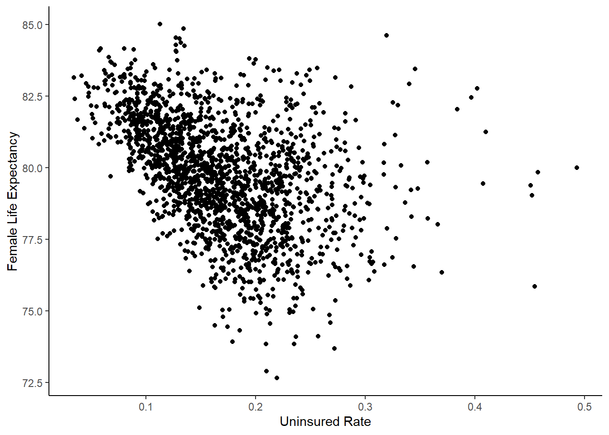

Lab 7: Multiple Regression in Life Expectancy and Homelessness
The goals of this lab are to:
Practice merging and manipulating data in R using dplyr
Introduce the
janitorpackageRun multiple linear regressions in R
Illustrate how regression can help us do better analysis by “controlling for” other variables
The first step in the lab is to download the two datasets we will use: Life Expectancy-Insurance Example Data.xlsx and homelessness_data.xlsx.
Life Expectancy and Insurance
We previously worked with this data in Excel and merged the various sheets together. Here, we will do the same work we did previously but in R to illustrate that R makes some things a lot easier. (Not everything! I had to change the insurance sheet because it was not R-friendly.)
First, let’s set our working directory and install the libraries we need for the lab.
library(dplyr)
library(ggplot2)
library(janitor)
setwd("[MY WORKING DIRECTORY]")Read In and Merge Data
The main sheet we will use as our base sheet is the life expectancy sheet. Let’s read it in and take a look.
life_exp <- readxl::read_xlsx("Life Expectancy-Insurance Example Data.xlsx", sheet = 1)
head(life_exp)Note that the key that we will be merging on is the fips column.
We want to subset the data to only be 2010 and the columns for male and female life expectancy by county. We can also rename the variables to be easier to type. All of this is easy using dplyr and janitor. janitor has a function called clean_names() which makes all the variables lowercase and removes spaces and special characters. Remember that we use filter() to subset rows and select() to subset columns.
life_exp <- life_exp |>
filter(Year == 2010) |>
clean_names() |>
select(state, county, fips, female_le, male_le) Next, we’ll read in the income sheet. We need to create a fips code that matches the code from the other sheet, and we should subset the data so we aren’t merging too much extra information. From reading the information from the data source of all the data sets, I know that the fips code has the state code at the beginning, followed by 3 digits for the county.
income <- readxl::read_xlsx("data/Life Expectancy-Insurance Example Data.xlsx", sheet = 2)
income$fips <- income$STATEA*1000 + income$COUNTYA
income <- income |>
clean_names() |>
select(fips, median_hh_income) We then use the merge function to merge the data.
life_exp <- merge(life_exp, income, by = "fips")Next, read in the insurance sheet and take a look.
insurance <- readxl::read_xlsx("data/Life Expectancy-Insurance Example Data.xlsx", sheet = 3)We need to calculate the uninsured rate by county for people age 18 to 65. With this code, using group_by() and summarize(), we can get uninsured rate by fips code.
insurance$FIPS = 1000*insurance$STATEA + insurance$COUNTYA
uninsured <- insurance |>
clean_names() |>
group_by(fips) |>
summarize(uninsured_rate = (male_under65_uninsured + female_under65_uninsured)/(male_under65_total + female_under65_total)) Now, let’s merge our uninsured data frame with the life expectancy data frame.
life_exp <- merge(life_exp, uninsured, by = "fips")Lastly, we’ll load and merge the region data. For this merge, we use the state name as the key rather than the fips code. We’ll also remove all of the data frames that we don’t need anymore.
region <- readxl::read_xlsx("data/Life Expectancy-Insurance Example Data.xlsx", sheet = 4)
life_exp <- merge(life_exp, region, by.x = "state", by.y = "STATE") # With different column names, need by.x and by.y
rm(income, insurance, region, uninsured)Now the data is all merged, we can start running regressions!
Analysis
Our main question in this analysis will be: do places with more uninsured people have lower life expectancy? We might think that this relationship exists because people without health insurance don’t have access to healthcare and might not get the treatments they need.
Let’s start with a scatterplot and a simple correlation:
cor(life_exp$uninsured_rate, life_exp$female_le)[1] -0.4237297ggplot(data = life_exp) +
geom_point(aes(x = uninsured_rate, y = female_le)) +
xlab("Uninsured Rate") +
ylab("Female Life Expectancy") +
theme_classic()
The correlation between life expectancy and the uninsured rate is strongly negative, and this is evident in the scatter plot. Let’s try a simple linear regression. Remember that the formula for a regression is lm(), which stands for “linear model”.
summary(lm(female_le ~ uninsured_rate, data = life_exp))
Call:
lm(formula = female_le ~ uninsured_rate, data = life_exp)
Residuals:
Min 1Q Median 3Q Max
-6.4294 -1.1210 0.0163 1.1688 6.9117
Coefficients:
Estimate Std. Error t value Pr(>|t|)
(Intercept) 82.0925 0.1235 664.89 <2e-16 ***
uninsured_rate -13.7320 0.6853 -20.04 <2e-16 ***
---
Signif. codes: 0 '***' 0.001 '**' 0.01 '*' 0.05 '.' 0.1 ' ' 1
Residual standard error: 1.77 on 1835 degrees of freedom
Multiple R-squared: 0.1795, Adjusted R-squared: 0.1791
F-statistic: 401.6 on 1 and 1835 DF, p-value: < 2.2e-16From this, we can see that the regression equation is: \[ Female Life Expectancy = 82.5 - 13.2*Uninsured Rate \] The uninsured rate has a large negative effect. The effect is statistically significant, as evidenced by the very low p-value. We are also concerned with practical significance - is the effect big enough to care about? Let’s try to put the coefficient into perspective by using some real values.
summary(life_exp$uninsured_rate) Min. 1st Qu. Median Mean 3rd Qu. Max.
0.03419 0.12709 0.16389 0.16980 0.20645 0.49321 The 25th percentile of the uninsured rate is 15%, and the 75th percentile is 25%. If we went from the 25th to 75th percentiles in uninsured rate, the expected life span in the county is 1.3 years lower. \((25\% - 15\%)*13.2 = 1.32\) . That’s pretty big!
Controlling for Variables
There’s a big omitted variable here. Income probably affects life expectancy and the uninsured rate. That means that our coefficient may be biased upward, seeming like the uninsured rate has a bigger effect than it really does. Let’s add income to the model.
summary(lm(female_le ~ uninsured_rate + median_hh_income, data = life_exp))
Call:
lm(formula = female_le ~ uninsured_rate + median_hh_income, data = life_exp)
Residuals:
Min 1Q Median 3Q Max
-5.2601 -0.9845 0.0061 0.9900 5.5107
Coefficients:
Estimate Std. Error t value Pr(>|t|)
(Intercept) 7.619e+01 2.278e-01 334.547 < 2e-16 ***
uninsured_rate -4.697e+00 6.476e-01 -7.253 5.99e-13 ***
median_hh_income 9.299e-05 3.208e-06 28.990 < 2e-16 ***
---
Signif. codes: 0 '***' 0.001 '**' 0.01 '*' 0.05 '.' 0.1 ' ' 1
Residual standard error: 1.466 on 1834 degrees of freedom
Multiple R-squared: 0.4374, Adjusted R-squared: 0.4368
F-statistic: 712.8 on 2 and 1834 DF, p-value: < 2.2e-16When we include income, the effect of the uninsured rate is still statistically significant and negative, but now the magnitude is smaller. The formula is now: \[ Female Life Expectancy = 76.8 - 5.5*Uninsured Rate + 0.00008*Median Household Income\] If we go from the 25th to 75th percentiles of uninsured rate now, life expectancy is only 0.6 years lower. \[ (25\% - 15\%)*5.5 = 0.6 \]
The last thing we will do with this data is add region as an explanatory variable. Region may also be an omitted variable. Some regions, like the South, have lots of poverty and little government funding, meaning that the uninsured rate could be high and life expectancy could be lower. Let’s see if this makes a difference.
summary(lm(female_le ~ uninsured_rate + median_hh_income + Region, data = life_exp))
Call:
lm(formula = female_le ~ uninsured_rate + median_hh_income +
Region, data = life_exp)
Residuals:
Min 1Q Median 3Q Max
-4.7885 -0.8462 -0.0313 0.8068 5.1216
Coefficients:
Estimate Std. Error t value Pr(>|t|)
(Intercept) 7.622e+01 2.087e-01 365.270 <2e-16 ***
uninsured_rate 7.690e-02 6.873e-01 0.112 0.9109
median_hh_income 8.827e-05 2.937e-06 30.051 <2e-16 ***
RegionNortheast 1.858e-01 1.080e-01 1.720 0.0856 .
RegionSouth -1.407e+00 8.180e-02 -17.197 <2e-16 ***
RegionWest 2.338e-01 1.124e-01 2.081 0.0376 *
---
Signif. codes: 0 '***' 0.001 '**' 0.01 '*' 0.05 '.' 0.1 ' ' 1
Residual standard error: 1.298 on 1831 degrees of freedom
Multiple R-squared: 0.5596, Adjusted R-squared: 0.5584
F-statistic: 465.3 on 5 and 1831 DF, p-value: < 2.2e-16Which regions are statistically significant? What is the reference group? (Hint: you can type unique(life_exp$region) into the console to see what the regions are.)
The coefficient on uninsured rate is now even smaller and barely statistically significant. Going from the 25th to 75th percentiles only decreases life expectancy by 0.1 years.
Now we can see that using regression to “control for” variables gives us the opportunity to see what relationships between data really are after removing omitted variable bias.
Homelessness Data
Now, you will do a similar analysis on your own using the homelessness data. The Excel document contains 4 sheets of state-level variables related to homelessness. You should do an analysis to see what the effect of federal aid per homeless person in dollars is on the homeless rate.
The bold questions will correspond to questions in the Canvas quiz.
Steps:
- Load the datasets from the 4 sheets of the homelessness Excel sheet, which include: 1) the number of homeless people; 2) the population, per capita income, median gross rent and poverty rate; 3) the region; and 4) the federal aid. Merge them all together using either the state code or the state name.
The Federal Aid sheet is not aggregated by state, and instead is broken down by “continuums of care”, which are substate entities. Use this code to turn the data into state-level data and just get the amount of spending (amount). Merge the state_spending data with the other data using the state_code variable.
spending <- readxl::read_xlsx("homelessness_data.xlsx", sheet = 4)
spending$state_code <- substr(spending$coc_number, 1, 2)
state_spending <- spending |>
group_by(state_code) |>
summarize(funding = sum(amount))Calculate the number of homeless people per 100,000 population for each state using the formula:
\[ 100,000*\dfrac{\#homeless}{population} \]
For the code, you can reference where we calculated the uninsured rate above.
- Calculate the poverty rate for each state. The poverty variables
under.5andpov_0.5to0.99include the number of people below 50% of the poverty rate and between 50 and 90% of the poverty rate. Those should be the numerator, and the denominator should betotal, which is the total population for whom poverty status is determined.
- Create a scatter plot with poverty on the x axis and the number of homeless people per 100,000 (homeless rate) using ggplot and geom_point. (Be sure to label your axes.) What do you see? Why do you think that is?
- Do a regression to predict the percent homeless using the poverty rate. Report the coefficients.
- Now, try running a regression where you include per capita income, median gross rent, the poverty rate, and the region in addition to the federal aid per homeless person. How did the coefficient change? How do you explain that?